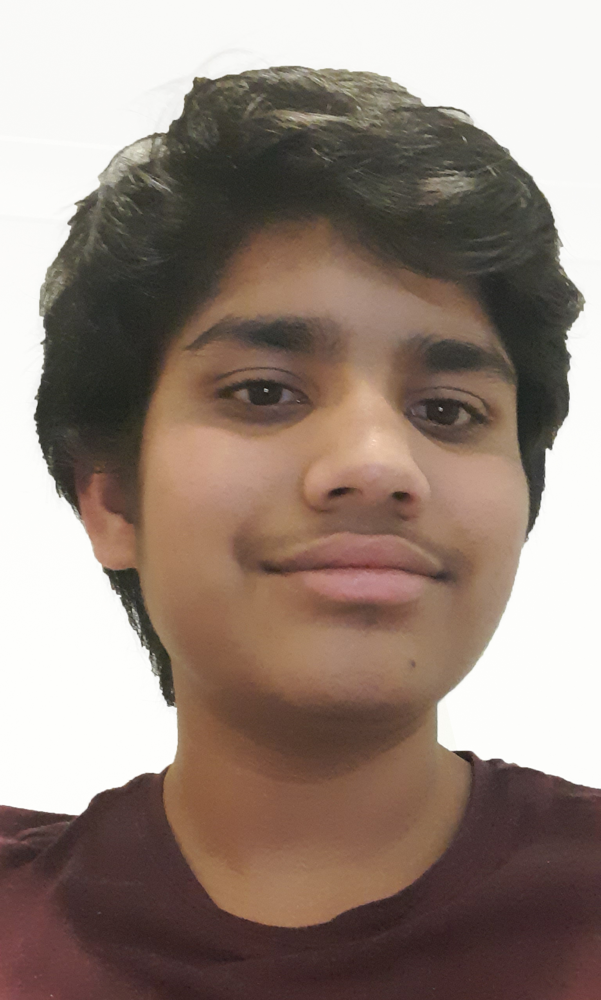

Welcome to the tales where we expose the dark, hidden secrets of your favourite childhood tales and nursery rhymes. We here at “into the tales” wish to bring you a little bit of magic and a taste of truth. We dig deep into
the modern happy versions of fairy tales/nursery rhymes and discover their origins. Many tales are perceived as joyful pastimes for children, although they are based on not so pleasant times and experiences in history. We unmask the unfiltered
original versions of children’s rhymes.
Our Inspiration
Our inspiration for this website is to show the history of fairy tales and rhymes to teens, children in adults of the world. As several websites already have just the tales/rhymes for children to read, we wanted to be
different and explain teh origins behind teh stories. Our motivation to make this website was Ms Saki in giving us our Year 9 IST Major Project 2.
About each of Us

Hi, I'm Tirth patel. I'm a programmer, game developer and artist. I love faritails (especially the dark ones). I am an avid reader and love spooky stories, mostly books such as the spooks series. I am very happy to be working with such a talented writer for this project to show the teenagers of the world that fairy tales and nursery rhymes often have an interesting backstory. Our goal with this website was to provide an interesting and interactive experience to our visitors.
Hi my name is rishi and i am just going to talk about myself for a bit. I am a coder/writer. I have been obsessed with fairy tales and nursery rhymes for my whole life. I enjoy listening and especially telling tales to children. It expands their imagination and encourages them to challenge the impossible. But as time moves on, older children are no longer interested in fairy tales at all. Now my goal is to make older children such as teenagers interested in fairy tales and nursery rhymes again. So our website was made to hook older kids back into fairy tales by showing them their historical meanings and origins.